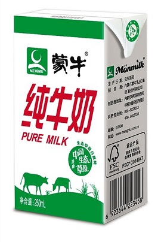
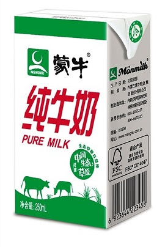

蒙牛牛奶，是内蒙古蒙牛乳业（集团）股份有限公司产品之一，作为蒙牛液体奶的首个高端副品牌；自上市起，即秉承奉献最佳品质的理念，致力于打造中国"最好的牛奶"。蒙牛公司获悉，在近日于意大利举行的2011年国际乳品业联合会（IDF）世界乳业峰会上，中国蒙牛牛奶获得两项IDF大奖。
| 中文名 | 牛奶 | 主要食用功效 | 提高身体抵抗力，补充各种微量元素，蛋白质 |
| 是否含防腐剂 | 否 | 适宜人群 | 一般人群均可食用 |
| 主要原料 | 水，脂肪，磷脂，蛋白质，乳糖，无机盐等 | 副作用 | 婴儿湿疹、消化不良、夹杂感染 |
| 主要营养成分 | 钙，磷，铁，锌等 | 所属企业 | 内蒙古蒙牛乳业股份有限公司 |
产品分类
主要有三支单品：蒙牛纯牛奶、蒙牛低脂奶、蒙牛有机奶。
 蒙牛有机奶，蕴含19种原生营养，每100g含优质乳蛋白大于3.5%，高于国家标准20%。国内首创的"有机奶产业链"生产体系。100%限定产地，拥有专属第七有机牧场，所产优质牛奶专供蒙牛产品的生产，全程监控，从根本上保证蒙牛产品的品质，生产过程0添加0污染，拥有完善的质量检验体系，保证蒙牛有机奶从牧场到成品的品质，安全放心。
蒙牛专属牧场中的第七有机牧场，国内首家获得南京国家环境保护总局有机食品发展中心OFDC有机认证，牧场占地三千余亩，天然资源得天独厚，牧场外围的天然隔离带全方位隔离外界侵扰，肥沃的有机土壤、海拔千米的纯净空气、地下无污染的深层水源、孕育天然营养比例的优质有机牧草，无化肥、无农药、无抗生素等人为破坏，精选纯正血统的荷斯坦奶牛，每头奶牛独享3000多平米的自由空间，每一滴牛奶都保留了天然营养和口感，品质纯正，稀有珍贵！
 蒙牛有机奶，蕴含19种原生营养，每100g含优质乳蛋白大于3.5%，高于国家标准20%。国内首创的"有机奶产业链"生产体系。100%限定产地，拥有专属第七有机牧场，所产优质牛奶专供蒙牛产品的生产，全程监控，从根本上保证蒙牛产品的品质，生产过程0添加0污染，拥有完善的质量检验体系，保证蒙牛有机奶从牧场到成品的品质，安全放心。
蒙牛专属牧场中的第七有机牧场，国内首家获得南京国家环境保护总局有机食品发展中心OFDC有机认证，牧场占地三千余亩，天然资源得天独厚，牧场外围的天然隔离带全方位隔离外界侵扰，肥沃的有机土壤、海拔千米的纯净空气、地下无污染的深层水源、孕育天然营养比例的优质有机牧草，无化肥、无农药、无抗生素等人为破坏，精选纯正血统的荷斯坦奶牛，每头奶牛独享3000多平米的自由空间，每一滴牛奶都保留了天然营养和口感，品质纯正，稀有珍贵！
代表产品